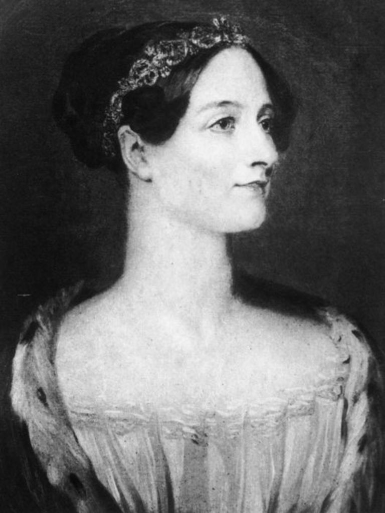
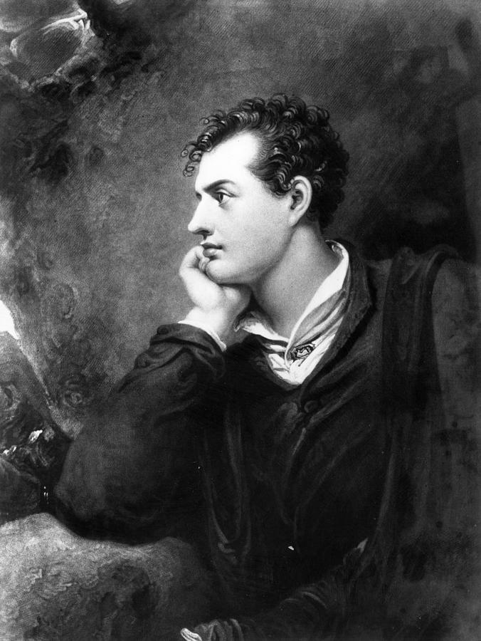

Ada Lovelace
A primeira programadora
Em 1843, Ada Lovelace traduziu os trabalhos do matemático Charles Babbage, que inventou o primeiro computador genérico, chamado de Analytic Machine. Assim, ela percebeu que a máquina seria capaz de muito mais coisas do que seu criador havia imaginado. As notas deixadas por Ada no texto têm mais conteúdo do que a tradução em si. Nessas anotações, ela criou um algoritmo que poderia fazer com que a Analytical Machine computasse uma série de números complexos, conhecidos como princípio de Bernoulli. Em outras palavras: Lovelace escreveu o primeiro programa de computador do mundo.
Lord Byron é considerado um dos maiores poetas da língua inglesa e Ada Lovelace é a sua única filha legítima. Ele se separou da mãe de Ada, Anne Isabella Byron, quando a menina tinha pouco mais de um mês de vida, em 1815. Lord Byron morreu aos 36 anos e teve pouco contato com sua filha. Apesar disso, pouco antes de Ada morrer, com a mesma idade, de câncer de útero, pediu para ser enterrada próximo ao pai, numa igreja em Nottingham, na Inglaterra.
